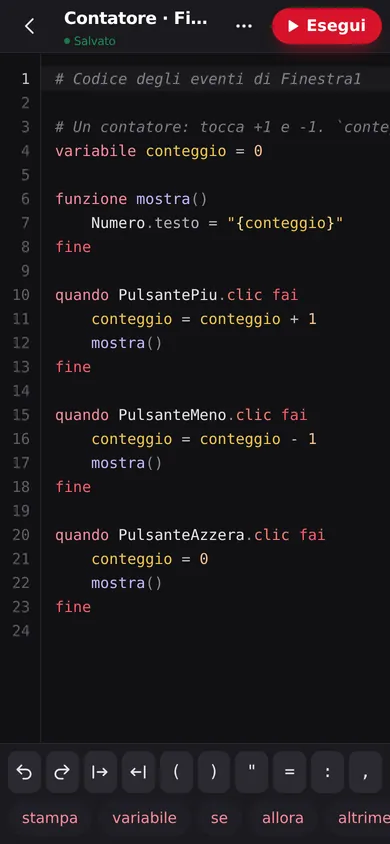
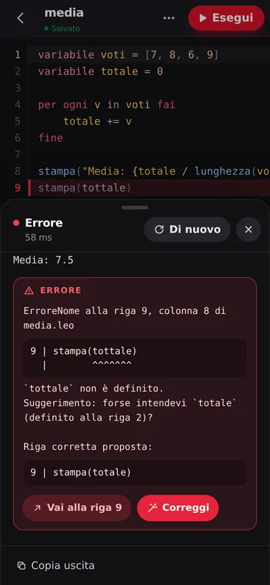

Nuovo programma
Scrivi, premi Esegui, leggi
- Due file di tasti sopra la tastiera: i simboli (
( ) " = :) e le parole di Leo (stampa,se,allora…) - Il codice colorato come in Leo Studio, con i numeri di riga
- Errori in italiano, con la riga corretta proposta: un tocco su Correggi
- Esempi pronti da aprire e i tuoi programmi salvati nell'app